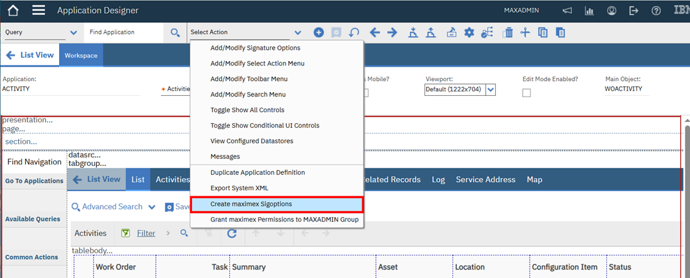
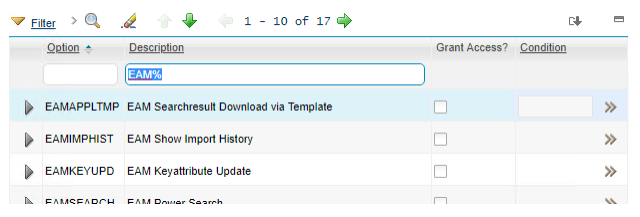

Enable the maximex in your applications
Enabling the tool in an application is a two step process.
- Create the required sigoptions
- Enable the sigoptions in the Security Groups application
Create the Sigoptions in the application
If you want to enable the tool in an application within Maximo then
- open the application in the application designer
- execute the action menu entry “Create maximex Sigoptions”

This creates the requires signature options and searchbar menu entries for the tool. A message is displayed once the process is finished.

The action menu entry "Grant maximex Permissions to MAXADMIN Group" is a convenient way to enable the sigoptions of the tool to the MAXADMIN group. To grant options to other groups use the security groups applications.

Grant the maximex Signature Options to Security Groups
The signature options for the maximex all start with the prefix "EAM" in their description. Grant (some of) these sigoptions to your security groups according to your business needs.

Changed security settings only take effect after the user log out and relogin to Maximo.